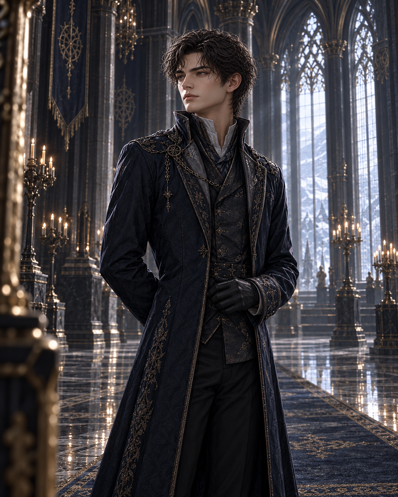

다음 날 오전.
대전의 천장을 덮은 거울들은 아침부터 굶주려 있었다.
대신들은 각자의 자리에 선 채 입으로는 관용을 말하고, 눈으로는 몇 번이나 천장을 훔쳐보았다.
그들이 기다리는 것은 사절단의 요구가 아니었다.
북부 변경령의 척박한 땅에서 자라난 후계자가 이 완벽한 궁정에 발을 들였을 때, 거울이 그의 얼굴을 어떤 모양으로 고쳐놓을지 보고 싶어 했다.
거칠고 무례한 이방인.
질서라는 말을 이해하지 못하는 야만인.
왕국의 자비를 받으면서도 감사할 줄 모르는 자.
아직 얼굴조차 보지 못했지만, 대전 안의 사람들은 이미 그에 관해 알고 있다고 믿고 있었다.
아이리스는 아버지의 옥좌 아래에 서 있었다.
오늘의 드레스도 어제와 조금도 다르지 않았다. 숨을 들이쉴 때마다 갈비뼈를 따라 단단한 천이 조여왔다. 쇄골 아래에는 어제 커런이 걸어준 사파이어가 차갑게 내려앉아 있었다.
아이리스는 오늘도 같은 얼굴을 하고 있었다.
그녀의 머리 위 거울은 언제나처럼 흠결 하나 없는 공주의 모습을 비추고 있었다.
오전 열한 시를 알리는 종이 울렸다.
무거운 참나무 문이 열렸다.
아이리스는 자신도 모르게 거친 발소리를 기다리고 있었다.
궁정 사람들이 변경의 후계자를 묘사할 때마다 빠지지 않던 소리였다.
넓은 보폭으로 대리석을 짓밟는 발.
짐승의 털과 투박한 철갑.
아이리스는 그것이 사실이라 믿은 적은 없었다.
그런데도 너무 오래 들은 이야기는 때때로 기억처럼 몸 안에 남았다.
그러나 가장 먼저 들려온 것은 대리석 위를 가볍게 가르는 일정한 발소리였다.
변경 사절단이 대전으로 들어왔다.
그 선두에는 짙은 남색 제복을 입은 남자가 있었다.

제복의 선은 중앙의 어떤 귀족이 입은 옷보다도 유려했고, 장식은 과하지 않았으며, 소매와 어깨는 그의 몸에 맞춰 한 치의 흐트러짐도 없이 정돈되어 있었다.
짐승의 가죽도, 흙 묻은 장화도 없었다.
그는 너무 단정해서 오히려 무례해 보였다.
궁정이 자신에게 무엇을 기대하고 있는지 알고도, 그 기대에 단 하나도 응해주지 않기로 한 사람처럼.
남자는 옥좌 앞에서 걸음을 멈췄다.
그리고 예법 교사조차 흠잡을 수 없는 각도로 고개를 숙였다.
“북부 변경령의 베인가를 대표하여 에드먼드 폐하와 세라핀 왕비 전하께 인사를 올립니다.”
목소리 역시 예상과 달랐다.
낮고 부드러웠으며, 궁정식 억양에도 어긋남이 없었다.
대신들 사이에서 아주 작은 동요가 일었다.
누군가는 실망한 듯했고, 누군가는 경계를 늦추지 못했다. 몇몇 젊은 귀족들은 흥미를 숨기지 않았다.
자연스럽게 시선들이 천장의 거울로 향했다.
곧 거울이 그들에게 무엇을 믿어야 하는지 알려줄 것이었다.
잠시 뒤, 대전 중앙의 원형 거울에 남자의 인영이 맺혔다.
얼굴을 알아보는 데에는 아무 어려움도 없었다. 다만 눈매에 어린 서늘함이 채 가시기도 전에, 그 위로 느긋하게 웃는 낯이 겹쳤다.
아이리스는 남자가 표정을 바꾸었나 싶어 눈을 내렸다.
그는 여전히 왕의 다음 말을 기다리고 있었다.
재무대신은 그의 제복에 달린 단추와 옷감의 결을 살폈다. 변경의 가문이 숨겨둔 부를 계산하는 눈이었다.
늙은 장군들은 발뒤꿈치가 바닥에 닿는 각도와 어깨의 중심에서, 궁정 예법과는 다른 훈련의 흔적을 찾았다.
젊은 귀부인들은 그의 느긋한 미소를 매혹이라 여겼고, 그들의 아버지들은 같은 미소에서 오만을 읽었다.
오른편에 서 있던 기록관리부 수정 펜이 장부를 펼쳤다.
그는 장부 가장자리에 ‘온화함ʼ이라고 적었다. 펜촉을 떼고 거울을 한 번 더 보더니 그 말에 가느다란 선을 그었다.
지운 글씨는 여전히 읽을 수 있었다.
그 곁에 다른 말을 적으려던 펜촉이 멈췄다. 잉크 한 방울이 종이 위로 천천히 번졌다.
“그대가 북부 변경령을 대표해 온 베인의 후계자 홀리스 베인이 맞는가?”
그 이름을 들은 남자가 고개를 들었다.
어젯밤 접견 명단의 첫 줄에서 읽은 이름이었다. 장부를 고쳐 쓰는 대신 그대로 들고 오겠다던 그 사람이 지금 아버지의 대답을 기다리고 있었다.
아니, 대답을 기다리는 쪽은 아버지였다.
남자는 다시 정확한 각도로 고개를 숙였다.
“중앙의 장부에는 그렇게 적혀 있을 겁니다, 폐하.”
대전 안의 공기가 아주 조금 달라졌다.
틀린 대답은 아니었다.
그러나 왕이 물은 것은 장부에 적힌 이름이 아니었다.
에드먼드의 눈이 가늘어졌다.
“장부가 아니라 그대에게 묻고 있다.”
남자는 잠시 생각하는 듯했다. 그 짧은 침묵조차 무례라기보다 신중함으로 보였다.
“이 자리에서는 홀리스 베인으로 답하겠습니다.”
그가 말했다.
입가에는 온화한 미소가 떠올라 있었다.
“이곳에서는 그 이름이 필요하다고 들었습니다.”
누군가 숨을 들이켰다.
커런의 표정이 굳었다.
펜은 방금 들은 대답을 장부에 옮겼다.
아이리스는 마지막 말을 속으로 한 번 되짚었다.
‘이곳에서는.ʼ
에드먼드는 남자를 한동안 바라보았다.
“베인가는 여전히 말이 많군.”
왕이 말했다.
홀리스의 미소가 아주 조금 깊어졌다.
“국경에서는 침묵이 반드시 예의로 받아들여지지는 않습니다, 폐하.”
홀리스가 답했다.
몇몇 장군들이 아주 작게 웃었다.
그 웃음을 들은 재무대신의 표정은 더 불편해졌다.
거울 속 홀리스의 얼굴이 다시 흔들렸다.
에드먼드는 시선을 거두고 아이리스를 바라보았다.
“왕국을 대표해 사절을 맞이하거라.”
아이리스는 한 걸음 앞으로 나섰다.
드레스가 갈비뼈를 조였다. 사파이어가 가슴 위 한가운데에서 무겁게 흔들렸다.
그녀는 홀리스 앞에 섰다.
가까이에서 본 그의 얼굴은 거울 속에서보다 단순했다.
적어도 처음에는 그렇게 보였다.
아이리스는 미소를 지었다.
감사합니다를 뜻하는 미소.
염려하지 않으셔도 됩니다를 뜻하는 고요함.
어제 아침부터 수없이 되풀이한 얼굴이 한 치의 오차도 없이 제자리를 찾았다.
“홀리스 베인 경. 애시워스 왕국은 변경의 사절단을 기꺼이 맞이합니다.”
그녀가 말했다.
“머무시는 동안 왕국의 질서와 환대가 부족함 없이 닿기를 바랍니다.”
홀리스가 아이리스를 바라보았다.
왕에게 보였던 느긋한 미소도, 대신들을 긴장시켰던 서늘함도 그의 얼굴에서 잠시 사라졌다.
그의 시선이 천장의 거울로 올라갔다가, 아이리스의 손으로 내려왔다.
드레스 자락을 놓치지 않으려는 듯 쥔 손.
아이리스는 그제야 자신의 손가락에 힘이 들어가 있다는 사실을 알아차렸다.
홀리스가 고개를 숙였다.
“환대에 감사드립니다, 전하.”
그리고 거울을 향해 눈을 들었다.
“전하의 거울은 참으로 성실하군요.”
대신들 중 몇 명이 거울을 올려다보았다.
그들은 그것을 궁정의 아름다움에 대한 찬사로 받아들이는 듯했다.
“한순간도 전하에게서 눈을 떼지 않으니 말입니다.”
홀리스가 말했다.
목소리는 낮고 부드러웠다.
불경이라 부르기에는 지나치게 온화했고, 칭찬이라 믿기에는 의미가 조금 어긋나 있었다.
아이리스는 대답해야 했다.
낯선 사절의 찬사를 겸손하게 받아들이고, 궁정의 거울이 왕가의 명예를 지켜준다고 말해야 했다.
그다음 문장은 이미 알고 있었다.
평생 비슷한 문장들을 준비하며 살아왔다.
그러나 입술이 열리지 않았다.
손가락을 조금 펴자 쥐고 있던 비단이 손바닥을 따라 미끄러졌다. 거울 속에서는 보이지 않던 구김이 잡혀 있었다.
커런이 아이리스의 왼쪽으로 반걸음 다가섰다.
어제 연회에서 사람들과 아이리스 사이를 막아섰던 것과 같은 움직임이었다.
그 움직임을 본 홀리스의 얼굴에 다시 미소가 돌아왔다.
이번에는 아이리스에게 보였던 것과 다른 미소였다.
정중하고, 무해하며, 아무것도 알아차리지 못한 사람의 얼굴.
그는 곧 한 걸음 물러났다.
아이리스가 대답하지 못한 시간은 길지 않았다.
아마 두 번 숨을 쉬는 사이였을 것이다.
하지만 아이리스에게는 그 짧은 침묵이 대전 전체보다 넓게 느껴졌다.
“거울은 왕국의 믿음을 비추는 것이니까요.”
마침내 그녀가 말했다.
준비된 대답과 크게 다르지 않았다.
홀리스는 고개를 숙였다.
“그렇군요.”
그는 더 묻지 않았다.
그 짧은 대답이 오히려 아이리스의 마음에 오래 남았다.
홀리스가 사절단의 자리로 물러난 뒤에도 거울은 하나의 얼굴에 머물지 못했다.
한순간에는 우하한 귀족이었고, 다음 순간에는 경계를 늦출 수 없는 이방인이었다.
펜은 지워둔 말 곁에 짧게 적었다.
인영이 겹쳐 보임.
아이리스는 자신의 머리 위를 바라보았다.
거울 속 공주는 여전히 아름다웠다.
미소의 깊이도 정확했고, 눈을 내리뜨는 각도도 흐트러지지 않았다.
모두가 믿고 있는 아이리스 애시워스.
그 얼굴은 어제와 조금도 달라지지 않았다. 조금 전, 두 번의 숨이 지나도록 아무 대답도 나오지 않았을 때조차.
대답을 준비하는 일에는 평생을 써왔다.
그러나 조금 전 자신에게 필요했던 표정이 무엇인지는 알 수 없었다.
감사를 뜻하는 미소도 아니었다.
염려하지 않아도 된다는 고요함도 아니었다.
쇄골 아래에 묻어두었던 이름 없는 것이 처음으로 표면 가까이 움직였다.
“거울은 왕국의 믿음을 비추는 것이니까요.”
마침내 그녀가 말했다.
준비된 대답과 크게 다르지 않았다.
홀리스는 고개를 숙였다.
“그렇군요.”
그는 더 묻지 않았다.
그 짧은 대답이 오히려 아이리스의 마음에 오래 남았다.
홀리스가 사절단의 자리로 물러난 뒤에도 거울은 하나의 얼굴에 머물지 못했다.
상이 맺힐 때마다 다른 표정이 나타났다.
한순간에는 우아한 귀족이었고, 다음 순간에는 경계를 늦출 수 없는 이방인이었다. 잠시 뒤에는 아무런 야심도 없는 여행자처럼 보였다가, 다시 모든 것을 계산하고 있는 사람의 얼굴로 바뀌었다.
펜은 장부에서 세 번째 단어까지 지웠다.
종이 위에는 검은 선과 번진 잉크만 남았다.
아이리스는 자신의 머리 위를 바라보았다.
거울 속 공주는 여전히 아름다웠다.
미소의 깊이도 정확했고, 눈을 내리뜨는 각도도 흐트러지지 않았다.
모두가 믿고 있는 아이리스 애시워스.
그 얼굴은 어제와 조금도 달라지지 않았다.
그런데도 아이리스는 처음으로 그것을 완전하다고 느끼지 못했다.
대답을 준비하는 일에는 평생을 써왔다.
그러나 조금 전 자신에게 필요했던 표정이 무엇인지는 알 수 없었다.
감사를 뜻하는 미소도 아니었다.
염려하지 않아도 된다는 고요함도 아니었다.
쇄골 아래에 묻어두었던 이름 없는 것이 처음으로 표면 가까이 움직였다.